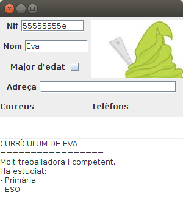
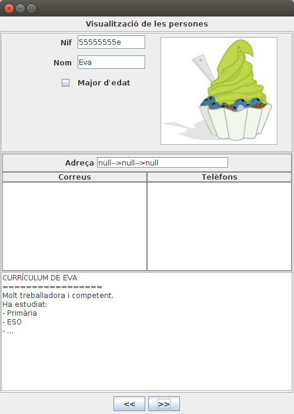

2.3.2.5 Exemple de tot junt
Per últim intentarem posar totes les dades, incloent la foto en una aplicació gràfica. Només mostrarem les dades de Eva, i així podrem veure la foto.
import java.awt.BorderLayout;
import java.awt.FlowLayout;
import java.awt.GridLayout;
import java.awt.Image;
import java.io.BufferedReader;
import java.io.IOException;
import java.lang.reflect.InvocationTargetException;
import java.sql.Connection;
import java.sql.DriverManager;
import java.sql.ResultSet;
import java.sql.SQLException;
import javax.imageio.ImageIO;
import javax.swing.ImageIcon;
import javax.swing.JCheckBox;
import javax.swing.JFrame;
import javax.swing.JLabel;
import javax.swing.JPanel;
import javax.swing.JTextArea;
import javax.swing.JTextField;
public class Prova9_Pantalla extends JFrame{
JTextField nif = new JTextField(9);
JTextField nom = new JTextField(9);
JCheckBox major = new JCheckBox();
JLabel foto = null;
JTextArea curric = new JTextArea();
JTextField adreca = new JTextField(20);
JTextArea correus = new JTextArea();
JTextArea telefons = new JTextArea();
JLabel et_nif = new JLabel("Nif");
JLabel et_nom = new JLabel("Nom");
JLabel et_major = new JLabel("Major d'edat");
JLabel et_adr = new JLabel("Adreça");
JLabel et_correus = new JLabel("Correus");
JLabel et_telefons = new JLabel("Telèfons");
JPanel pan1 = new JPanel(new GridLayout(1,2));
JPanel pan1_1 = new JPanel(new GridLayout(3,1));
JPanel pan1_1_1 = new JPanel(new FlowLayout());
JPanel pan1_1_2 = new JPanel(new FlowLayout());
JPanel pan1_1_3 = new JPanel(new FlowLayout());
JPanel pan1_2 = new JPanel(new FlowLayout());
JPanel pan2 = new JPanel(new BorderLayout());
JPanel pan2_1 = new JPanel(new FlowLayout());
JPanel pan2_2 = new JPanel(new GridLayout(2,2));
JPanel pan3 = new JPanel(new BorderLayout());
JPanel pan4 = new JPanel();
public void iniciar() throws SQLException, IOException, NoSuchMethodException, SecurityException, IllegalAccessException, IllegalArgumentException, InvocationTargetException {
this.setLayout(new GridLayout(3,1));
this.setBounds(100, 100, 300, 300);
this.getContentPane().add(pan1);
this.getContentPane().add(pan2);
this.getContentPane().add(pan3);
pan1.add(pan1_1);
pan1.add(pan1_2);
pan1_1.add(pan1_1_1);
pan1_1.add(pan1_1_2);
pan1_1.add(pan1_1_3);
pan1_1_1.add(et_nif);
pan1_1_1.add(nif);
pan1_1_2.add(et_nom);
pan1_1_2.add(nom);
pan1_1_3.add(et_major);
pan1_1_3.add(major);
pan2.add(pan2_1,BorderLayout.NORTH);
pan2.add(pan2_2,BorderLayout.CENTER);
pan2_1.add(et_adr);
pan2_1.add(adreca);
pan2_2.add(et_correus);
pan2_2.add(et_telefons);
pan2_2.add(correus);
pan2_2.add(telefons);
pan3.add(curric);
String url = "jdbc:postgresql://89.36.214.106:5432/rxx";
Connection con = DriverManager.getConnection(url, "rxx", "rxx");
ResultSet rs = con.createStatement().executeQuery("SELECT * FROM persona4 WHERE nom='Eva'");
if (rs.next()){
nif.setText(rs.getString(1));
nom.setText(rs.getString(2));
major.setSelected(rs.getBoolean(3));
if (rs.getBinaryStream(4)!=null){
Image img = ImageIO.read(rs.getBinaryStream(4));
foto = new JLabel(new ImageIcon(img));
pan1_2.add(foto);
}
if (rs.getCharacterStream(5)!=null){
BufferedReader bf = new BufferedReader(rs.getCharacterStream(5));
String s;
String tot="";
while ((s = bf.readLine()) != null) {
tot += s + "\n";
}
curric.setText(tot);
}
if (rs.getObject(6)!=null){
adreca.setText(rs.getObject(6).toString());
}
if (rs.getArray(7)!=null){
String[] corr = (String[]) rs.getArray(7).getArray();
for (String c : corr)
correus.append(c+"\n");
}
if (rs.getArray(8)!=null){
ResultSet tels = rs.getArray(8).getResultSet();
while (tels.next())
telefons.append(tels.getString(2)+"\n");
}
}
rs.close();
con.close();
this.setVisible(true);
}
}
I el programa principal, amb main() que el cridaria seria:
import java.io.IOException;
import java.lang.reflect.InvocationTargetException;
import java.sql.SQLException;
public class Prova9 {
public static void main(String[] args) throws SQLException, IOException, NoSuchMethodException, SecurityException, IllegalAccessException, IllegalArgumentException, InvocationTargetException {
Prova9_Pantalla finestra = new Prova9_Pantalla();
finestra.iniciar();
}
}
Aquest seria el resultat:

I com a exemple final, fem una variació de l'anterior, però en aquesta ocasió més completa, per a mostrar com podem passar de la taula a objectes, utilitzant la tècnica vista en la pregunta 2.3.2.5, és a dir, utilitzant l'altre driver que ens permetia accedir bé al contingut dels tipus estructurats.
Mirem primer les classes necessàries. La classe Adreca ja l'havíem vista:
import java.sql.SQLException;
import java.sql.Struct;
public class Adreca {
private String carrer = null;
private String codipostal = null;
private String poblacio = null;
public Adreca() {
}
public Adreca(String c, String cp, String p) {
this.carrer = c;
this.codipostal = cp;
this.poblacio = p;
}
public Adreca(Struct t_adr) throws SQLException {
if (t_adr != null) {
this.carrer = (String) t_adr.getAttributes()[0];
this.codipostal = (String) t_adr.getAttributes()[1];
this.poblacio = (String) t_adr.getAttributes()[2];
}
}
public String getCarrer() {
return carrer;
}
public void setCarrer(String carrer) {
this.carrer = carrer;
}
public String getCodipostal() {
return codipostal;
}
public void setCodipostal(String codipostal) {
this.codipostal = codipostal;
}
public String getPoblacio() {
return poblacio;
}
public void setPoblacio(String poblacio) {
this.poblacio = poblacio;
}
}
Ara ens farà falta també la classe Telefon. Observeu que també tenim el constructor al qual se li passa un Struct, que és el que utilitzarem.
import java.sql.SQLException;
import java.sql.Struct;
public class Telefon {
private boolean mobil;
private String numero;
public Telefon(boolean m,String n){
this.mobil=m;
this.numero=n;
}
public Telefon(Struct t_tel){
try {
this.mobil=(boolean) t_tel.getAttributes()[0];
this.numero=(String) t_tel.getAttributes()[1];
} catch (SQLException e) {
e.printStackTrace();
}
}
public boolean isMobil() {
return mobil;
}
public void setMobil(boolean mobil) {
this.mobil = mobil;
}
public String getNumero() {
return numero;
}
public void setNumero(String numero) {
this.numero = numero;
}
}
Per últim Persona. Hem utilitzat una tècnica un poc estranya: al constructor li passem un ResultSet, que suposem que estarà apuntant al contingut d'una fila de la taula PERSONA4.
import java.awt.Image;
import java.io.BufferedReader;
import java.io.IOException;
import java.sql.ResultSet;
import java.sql.SQLException;
import java.sql.Struct;
import java.util.ArrayList;
import java.util.Arrays;
import javax.imageio.ImageIO;
public class Persona {
private String nif;
private String nom;
private boolean majorEdat;
private Image foto;
private String curriculum;
private Adreca adreca;
private ArrayList<String> correusE;
private ArrayList<Telefon> telefons;
public Persona(String nif, String nom, boolean majorEdat, Image foto, String curriculum, Adreca adreca,
ArrayList<String> correusE, ArrayList<Telefon> telefons) {
super();
this.nif = nif;
this.nom = nom;
this.majorEdat = majorEdat;
this.foto = foto;
this.curriculum = curriculum;
this.adreca = adreca;
this.correusE = correusE;
this.telefons = telefons;
}
public Persona(ResultSet rs) {
super();
try {
this.nif = rs.getString(1);
this.nom = rs.getString(2);
this.majorEdat = rs.getBoolean(3);
if (rs.getBinaryStream(4) != null)
this.foto = ImageIO.read(rs.getBinaryStream(4));
else
this.foto=null;
String tot = "";
if (rs.getCharacterStream(5) != null) {
BufferedReader bf = new BufferedReader(rs.getCharacterStream(5));
String s=null;
while ((s = bf.readLine()) != null) {
tot += s + "\n";
}
}
this.curriculum = tot;
this.adreca = new Adreca((Struct) rs.getObject(6));
if (rs.getArray(7) != null)
this.correusE = new ArrayList<String>(Arrays.asList((String[]) rs.getArray(7).getArray())) ;
else
this.correusE = null;
if (rs.getArray(8) != null){
telefons = new ArrayList<Telefon>();
ResultSet tels = rs.getArray(8).getResultSet();
while (tels.next())
telefons.add(new Telefon((Struct)tels.getObject(2)));
}
else
this.telefons = null;
} catch (SQLException e) {
e.printStackTrace();
} catch (IOException e) {
e.printStackTrace();
}
}
public String getNif() {
return nif;
}
public void setNif(String nif) {
this.nif = nif;
}
public String getNom() {
return nom;
}
public void setNom(String nom) {
this.nom = nom;
}
public boolean isMajorEdat() {
return majorEdat;
}
public void setMajorEdat(boolean majorEdat) {
this.majorEdat = majorEdat;
}
public Image getFoto() {
return foto;
}
public void setFoto(Image foto) {
this.foto = foto;
}
public String getCurriculum() {
return curriculum;
}
public void setCurriculum(String curriculum) {
this.curriculum = curriculum;
}
public Adreca getAdreca() {
return adreca;
}
public void setAdreca(Adreca adreca) {
this.adreca = adreca;
}
public ArrayList<String> getCorreusE() {
return correusE;
}
public void setCorreusE(ArrayList<String> correusE) {
this.correusE = correusE;
}
public ArrayList<Telefon> getTelefons() {
return telefons;
}
public void setTelefons(ArrayList<Telefon> telefons) {
this.telefons = telefons;
}
}
Ara ja aniria el programa. Observeu què fàcil és des d'ací bolcar les dades des de la taula fins a un ArrayList d'objectes Persona. Hem fet també uns botons de moviment, per anar al registre següent i anterior (però en aquesta ocasió no els desactivem en arribar al principi o final; senzillament no funcionaran per a no eixir-nos del rang).
Com en el programa anterior, s'ha optat per construir molts panells, i anar col·locant tots els components en panells i subpannells. D'aquesta manera és més fàcil fer una redistribució de les coses. Però s'ha completat, i té un aspecte més acabat.
import java.awt.BorderLayout;
import java.awt.Color;
import java.awt.FlowLayout;
import java.awt.GridLayout;
import java.awt.event.ActionEvent;
import java.awt.event.ActionListener;
import java.io.IOException;
import java.lang.reflect.InvocationTargetException;
import java.sql.Connection;
import java.sql.DriverManager;
import java.sql.ResultSet;
import java.sql.SQLException;
import java.util.ArrayList;
import javax.swing.BorderFactory;
import javax.swing.ImageIcon;
import javax.swing.JButton;
import javax.swing.JCheckBox;
import javax.swing.JFrame;
import javax.swing.JLabel;
import javax.swing.JPanel;
import javax.swing.JTextArea;
import javax.swing.JTextField;
import javax.swing.SwingConstants;
public class Prova10_Pantalla extends JFrame implements ActionListener {
JTextField nif = new JTextField(9);
JTextField nom = new JTextField(9);
JCheckBox major = new JCheckBox();
JLabel foto = new JLabel("");
JTextArea curric = new JTextArea();
JTextField adreca = new JTextField(20);
JTextArea correus = new JTextArea();
JTextArea telefons = new JTextArea();
ArrayList<Persona> llista = new ArrayList<Persona>();
int indActual = 0;
JLabel et_inicial = new JLabel("Visualització de les persones");
JLabel et_nif = new JLabel("Nif");
JLabel et_nom = new JLabel("Nom");
JLabel et_major = new JLabel("Major d'edat");
JLabel et_adr = new JLabel("Adreça");
JLabel et_correus = new JLabel("Correus");
JLabel et_telefons = new JLabel("Telèfons");
JPanel panInicial = new JPanel(new FlowLayout());
JPanel panCentral = new JPanel(new GridLayout(3, 1));
JPanel pan1 = new JPanel(new GridLayout(1, 2));
JPanel pan1_1 = new JPanel(new GridLayout(6,2,10,10));
JPanel pan1_1_1 = new JPanel(new FlowLayout());
JPanel pan1_1_2 = new JPanel(new FlowLayout());
JPanel pan1_1_3 = new JPanel(new FlowLayout());
JPanel pan1_2 = new JPanel(new FlowLayout());
JPanel pan2 = new JPanel(new BorderLayout());
JPanel pan2_1 = new JPanel(new FlowLayout());
JPanel pan2_2 = new JPanel(new BorderLayout());
JPanel pan2_2_1 = new JPanel(new GridLayout(1,1,2, 2));
JPanel pan2_2_2 = new JPanel(new GridLayout(1,1,2, 2));
JPanel pan3 = new JPanel(new BorderLayout());
JPanel pan4 = new JPanel();
JPanel panInferior = new JPanel(new FlowLayout());
JButton ant = new JButton("<<");
JButton post = new JButton(">>");
JLabel buida = new JLabel("");
public void iniciar() throws SQLException, IOException, NoSuchMethodException, SecurityException,
IllegalAccessException, IllegalArgumentException, InvocationTargetException {
this.setLayout(new BorderLayout());
this.setBounds(100, 100, 500, 675);
this.getContentPane().add(panInicial, BorderLayout.NORTH);
this.getContentPane().add(panCentral, BorderLayout.CENTER);
panInicial.add(et_inicial);
panCentral.add(pan1);
panCentral.add(pan2);
panCentral.add(pan3);
panCentral.setBorder(BorderFactory.createEtchedBorder());
pan1_1.setBorder(BorderFactory.createEmptyBorder(2,2,2,2));
pan1.add(pan1_1);
pan1.add(pan1_2);
//pan1_1.add(pan1_1_1);
//pan1_1.add(pan1_1_2);
//pan1_1.add(pan1_1_3);
et_nif.setHorizontalAlignment(SwingConstants.RIGHT);
pan1_1.add(et_nif);
pan1_1.add(nif);
et_nom.setHorizontalAlignment(SwingConstants.RIGHT);
pan1_1.add(et_nom);
pan1_1.add(nom);
major.setHorizontalAlignment(SwingConstants.RIGHT);
pan1_1.add(major);
pan1_1.add(et_major);
pan1_1.add(buida);
pan1.setBorder(BorderFactory.createEtchedBorder());
pan1_2.add(foto);
pan2.add(pan2_1, BorderLayout.NORTH);
pan2.add(pan2_2, BorderLayout.CENTER);
pan2_1.add(et_adr);
pan2_1.add(adreca);
pan2_2_1.add(et_correus);
pan2_2_1.add(et_telefons);
pan2_2_2.add(correus);
pan2_2_2.add(telefons);
pan2_2.add(pan2_2_1, BorderLayout.NORTH);
pan2_2.add(pan2_2_2, BorderLayout.CENTER);
pan2.setBorder(BorderFactory.createEtchedBorder());
pan2_1.setBorder(BorderFactory.createLineBorder(Color.GRAY));
//pan2_2.setBorder( new MatteBorder(2, 2, 2, 2, Color.BLACK) );
pan2_2_1.setBorder(BorderFactory.createLineBorder(Color.GRAY));
pan2_2_1.setBackground( Color.GRAY );
pan2_2_2.setBorder(BorderFactory.createLineBorder(Color.GRAY));
pan2_2_2.setBackground( Color.GRAY );
et_correus.setOpaque(true);
et_telefons.setOpaque(true);
correus.setOpaque(true);
telefons.setOpaque(true);
pan3.add(curric);
pan3.setBorder(BorderFactory.createEtchedBorder());
this.getContentPane().add(panInferior, BorderLayout.SOUTH);
panInferior.add(ant);
panInferior.add(post);
String url = "jdbc:pgsql://89.36.214.106:5432/rxx";
Connection con = DriverManager.getConnection(url, "rxx", "rxx");
ResultSet rs = con.createStatement().executeQuery("SELECT * FROM PERSONA4 ORDER BY 1");
while (rs.next())
llista.add(new Persona(rs));
System.out.println(llista.size());
mostraPersona(indActual);
rs.close();
con.close();
this.setVisible(true);
ant.addActionListener(this);
post.addActionListener(this);
this.setDefaultCloseOperation(EXIT_ON_CLOSE);
}
private void mostraPersona(int i) {
Persona p = llista.get(i);
nif.setText(p.getNif());
nom.setText(p.getNom());
major.setSelected(p.isMajorEdat());
if (p.getFoto() != null) {
foto.setIcon(new ImageIcon(p.getFoto()));
//foto = new JLabel(new ImageIcon(p.getFoto()));
foto.setBorder(BorderFactory.createEtchedBorder());
pan1_2.setVisible(true);
} else
pan1_2.setVisible(false);
curric.setText(p.getCurriculum());
if (p.getAdreca() != null) {
adreca.setText(p.getAdreca().getCarrer() + "-->" + p.getAdreca().getCodipostal() + "-->"
+ p.getAdreca().getPoblacio());
} else
adreca.setText("");
correus.setText("");
if (p.getCorreusE() != null) {
for (String c : p.getCorreusE())
correus.append(c + "\n");
}
telefons.setText("");
if (p.getTelefons() != null) {
for (Telefon t : p.getTelefons()) {
telefons.append(t.getNumero() + " (");
if (t.isMobil())
telefons.append("mòbil)\n");
else
telefons.append("fixe)\n");
}
}
}
@Override
public void actionPerformed(ActionEvent e) {
if (e.getSource() == ant) {
if (indActual > 0)
indActual--;
}
if (e.getSource() == post) {
if (indActual < llista.size() - 1)
indActual++;
}
mostraPersona(indActual);
}
}
I aquest és el programa principal.
import java.io.IOException;
import java.lang.reflect.InvocationTargetException;
import java.sql.SQLException;
public class Prova10 {
public static void main(String[] args) throws SQLException, IOException, NoSuchMethodException, SecurityException, IllegalAccessException, IllegalArgumentException, InvocationTargetException {
Prova10_Pantalla finestra = new Prova10_Pantalla();
finestra.iniciar();
}
}
Aquest seria el seu aspecte:

Llicenciat sota la Llicència Creative Commons Reconeixement NoComercial CompartirIgual 2.5